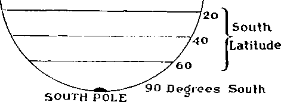
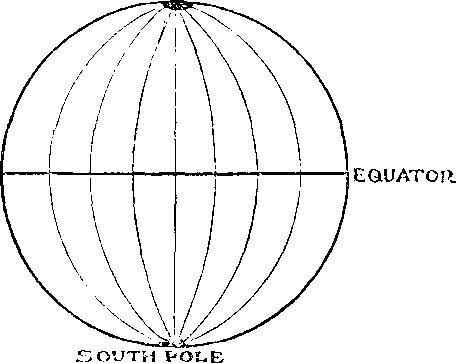
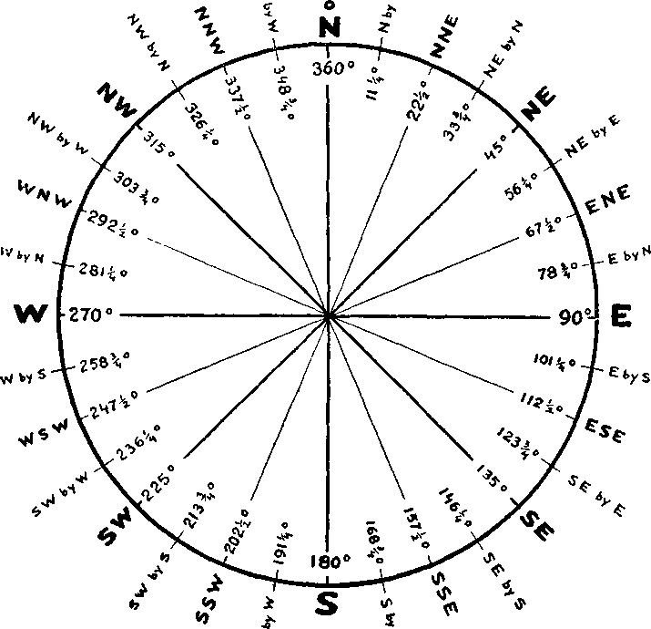
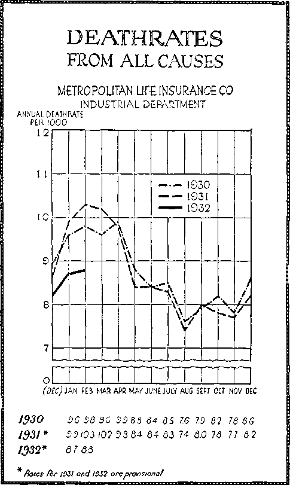

A JOURNAL OF FACT HOPE AND COURAGE
lll!IIIU3lllillllllfllllll!lllllll|||||||||||||||||||||||||||||||llllll
in this issue
ARGENTINA THE LAND OF PROMISE
THROUGH THE PRISM
SAFETY FIRST AT SEA
VACCINATION FIGHT WON
DEATH IS DECREASING
BARS TO HUMAN PROSPERITY
iiiiiigiiiiiiiiiiiiiiiiiiiiiiiiHiiMiiiiiiiiiiiiiiiiiiiiiiiiiiiiiiiiiiii
every other
WEDNESDAY
five cents a copy one dollar a year
Canada & Foreign 1.25
Vol. XIII - No. 333
June 22, 1932
CONTENTS
LABOR AND ECONOMICS
24,000 Krupp Employees Dismissed........[>Sf>
Hartford <lot Kid of Milk . . 59(1
Who Will Control Food? . . . 590
Kentucky Floggings Continue . 594
SOCIAL AND EDUCATIONAL
Compulsory Education of Unemployed
Uncle Sam’s Highest-Paid Employees
How Vaccination Fight Was Won 601
Women Smoke Fifteen Billion Cigarettes
MANUFACTURING AND MINING
Finding Gold All over Canada . 587
FINANCE—COMMERCE—TRANSPORTATION
Price of Bread in France . . . 591
Europe Shuts Eyes Tight . . . 592
Why America Has Deficit . . . 592
“Bay Not Up for Youkseiaes
Trevsukes upon Earth” . . 594
POLITICAL—DOMESTIC AND FOREIGN
.May Recreate Austro-Hungary . 588
Britain Not Disturbed over Ireland
Farmers and Bankers in Iowa . 591
League of Nations Encourages War
Missouri Legislators in Bad Business
AGRICULTURE AND HUSBANDRY
Venezuela's Pearl Fisheries . . 585
Tree Planters of Century Ago . 587
SCIENCE AND INVENTION
Semagraph Sets Tvpe Without Aid .... .....592
HOME AND HEALTH
Radium Poisoning from Drinking Water . .
Restoration of Sight .
. 589
. 589
TRAVEL AND MISCELLANY
Argentina—The Land of Promise 579
Pope Has Now Toy.....587
Japanese Soldiers Demonstrate . 589
Soviet Union Items.....593
RELIGION AND PHILOSOPHY
Thrilling Letter from Mexico . 585
Methodist Church in Decline . . 587
Where Pulpit Gets Message . . 5')i) The Radio Witness Work . . . 602 From Suburb of Asbury Park . . 603 Proofs that Death Is Decreasing (1>3 Bars to lit man Prosperity . . . C04
Published eieij oilier Wednesday :it 117 Adams Street, Brooklyn, N. Y., U. S. A., by WOODWORTH, KNORR & MARTIN
Coyai tno s and Proprietor Addies#: 117 Adam# Sheet, liiooklyn, A. Y., U. S. A. CLAYTON J. WOODWORTH . . Editor ROBFKT J. MARTIN . . Business Manager NATHAN 11. KNORR .. Secretary and Treasurer
1’1\E Cents a Copy—$1.00 a Yeah Make Remitiances to THE CluLDEX AGE Aotire to Subscribers': For your own safety, remit by postal or express nmnev order. Wo do not. as a rule, send acknowledgment of a renewal or a now subscription. Renewal blank (carrying notice of expiration) is sent vith the jontnnl one month I •(■•tore the subscription expires. Change of address, when requested, may be expected to appear on address label within one month
1’uldishod also in Esperanto, Finnish, German, Japanese, Norwegian, Polish, Swedish. Oi’FiCFs in Other Countries
Jhitish ............ 34 Craven Terrace, London, W. 2, England Canadian...........40 Irwin Avenue, Toronto 5, Ontario, Canada
A inti alasian ...... 7 Beresford Rd.. Stratliflcld, N. S. W., Australia South African..........G Lelie Street, Cape To\mi, South Africa
Entered as second-class matter at Brooklyn, N, Y., under the Act of March 3, 1S79.
Volume XIII Brooklyn, N. Y., Wednesday, June 22, 1932 Number 333
Argentina—The Land of Promise
A RGENTINA is as large as Montana, Idaho, Washington, Oregon, Utah, Wyoming, Colorado, New Mexico, Arizona, Nevada and California put together. It is 2,300 miles long and 930 miles wide. Extending through 34 degrees of latitude, from 22° to 56°, it has every climate desired, from tropical to frigid. Conditions vary widely in the same latitude; the Andes mountains are in the west; the Atlantic ocean and a great river system are in the east.
At the northeastern corner of the country, six hundred miles from Buenos Aires, are the Falls of the Iguazu, magnificent, wonderful, in many respects the world’s greatest cataracts, and certainly the most picturesque. There is a series of falls, the highest having a drop of 210 feet, which is 46 feet higher than Niagara Falls. The falls are semicircular, the distance around the brink being 13,128 feet. In order to properly view them the tourist must walk several miles in and out of tropical foliage. The Iguazu itself thunders and whirls its enormous volume of waters amid the solitude of primeval forests, surrounded by giant trees, creeping vines, orchids and other tropical growth. No doubt the time will come when these falls will do much of Argentina's work.
South of the Iguazu stretches for hundreds of miles the Argentinian Mesopotamia, one of the great granaries of the world. At one time devoted to cattle raising, this is now largely given over to vast cornfields, pouring forth an annual flood of millions of tons of golden grain. Some of the lagoons in this area are so vast and intricate that they have never been fully explored.
The great plains of the interior have their counterpart in the great plains of North America, which they much resemble. They already occupy a very prominent place in filling the world's bread basket. It is the wheat and cattle story of our western states all over again. The Gran Chaco plains of the north are heavily wooded, while the vast pampas of the center and south are treeless, and therefore ideal for wheat growing and cattle raising.
The area of Argentina is 1,153,119 square miles. That is as large as the combined extent of the United Kingdom, Germany, France, Italy, Spain, Sweden and Norway, yet the mineral zone of that vast area, so far as now known, is limited to but 48,000 square miles and is inhabited by only 20,000 people, mainly the residents of San Rafael and vicinity.
Of course the places where minerals are most easily found are in the mountains, because there the veins are revealed by outcroppings. At present there is so much land available in Argentina that the mountain regions are not sought. And, besides, transportation difficulties are in the way. In a small way, gold, silver and copper have been mined from early times. There is some oil at Rivadavia, but not enough for the needs of the country. Argentina must depend on imported coal.
Patagonia, the name once applied to all the southern end of the South American continent, was at one time supposed to be a worthless country. Within recent years this opinion has undergone a change. As civilization has pushed farther and farther south, one discovery has followed another, and the borderland continues to retreat toward the south pole.
Much of the credit for the opening of Patagonia is due to the provincial governor L. J. Fontana, who, when placed in charge of an area of ten thousand square leagues, made up his mind to learn something of the territory it embraced. Learning from friendly Indians of the fruitfulness and beauty of the Cordillera valleys, and the agreeable climate, Fontana spent three months getting to them. There were thirty in his party.
Fontana said of the results of his trip: ‘‘There were thirty of us and we belonged to four nationalities, yet all declared to me unanimously that they had seen no other spot on earth where nature had combined on such a liberal scale whatever is necessary for the welfare of mankind.”
?\s a natural consequence, Patagonia is being developed, along a wide and deep frontier. Settlements are springing up, and scientific methods are converting supposedly useless areas into sources of economic wealth. When the country has need of additional land there are vast areas that can he brought under irrigation vliicli are now waste lands.
On February 20, 1535, Pedro de Mendoza, Spanish explorer, sailed up the River Plata with a fleet of fourteen vessels, and landed at a place which he called “Santa Al aria de Buenos Aires” (Saint Alary of the Good Breezes) ; and though the town he then founded was destroyed by the Indians, it was rebuilt and the name Buenos Aires persists.
After Mendoza sailed back to Spain the expedition, consisting of about 2,000 men, went six hundred miles farther up the Plata and founded Asuncion, the first permanent Spanish settlement in the interior of South America, and the center of Spanish power in the La Plata region for two centuries.
Mendoza's name is preserved for posterity in the city hearing his name, a lovely place of 62,637 population, the principal seat of the wine industry, six hundred miles west of Buenos Aires. Mendoza is like a large park; its straight streets are lined with trees, and conduits of clear water run on either side, as in Phoenix and Salt Lake City. It has one of the largest wine factories in the world. It lies in clear sight of the Andes.
Buenos Aires, 5,860 miles from New York, 100 miles up the La data, with its population of 2,153,200, is the largest Spanish-speaking city in the world, and the largest city south of the equator. It is the same distance from the equator as Atlanta, Ga. Like Atlanta, it sometimes has a flurry of snow, and there are times when a fire feels good. The doubtful honor is claimed for Buenos Aires that it is “the most expensive city in the world” in which to live.
The population of Buenos Aires, and of the province of the same name, almost doubled in the twenty years from 1912 to 1932. The population of the province is now considerably more than 4,000,000. Buenos Aires has subways, and has adopted the interesting scheme of having one station yellow, the next green, the next blue, the next pink, etc. Thus the traveler can readily keep track of its location.
In a strictly agricultural country one does not expect to find many large cities, yet Rosario, which is neither the capital of the country nor of a province, hut just a good busy port and railroad town, has a population of 416,678. Cordoba has 228,000; Avellaneda, 193,431; La Plata, 169,678; Santa Fe, 121,248; Tucuman, 116,219, and Bahia Blanca, 100,000.
Argentina has 14 provinces governed by a constitution patterned after that of the United States, in which the provinces take the place of the states. There are also 10 territories which are administered by governors appointed by the president.
In Argentina there are about 80,000,000 head of livestock, descendants of stock originally brought from Europe. In the United States we have 600 cattle to every thousand people; in Argentina they have 4,000. As a natural result, Argentina has the greatest per’ capita meat consumption known, amounting to 198 pounds per person. Most of the beat eaten in Britain comes from the Argentine; half of the hides imported by the United (States come from that source.
Argentina ranks third among the countries of the world in its sheep, and fourth in the number of its cattle. The last livestock census showed 32,211.855 cattle, 9,858,111 horses, 3,768,738 pigs and 4-1,413,200 sheep. The wool clip is 333,336,000 pounds. The national livestock show awakens the same interest in Argentina now that such shows awakened in the United States fifty years ago. In the auction held in connection with one of these shows in 1925 a shorthorn bull brought $64,500, said to be the highest price ever paid for such an animal.
The soil of Argentina is divided into three almost equal divisions. A third is arable, and of the arable portion about one-half is now actually under cultivation. A third can be utilized for stock raising, and much of it is now so used. All of the remaining now supposedly waste land will sometime be put to good purposes. The Argentinean has found that it costs him 77 cents an acre to plow with a tractor and 45 cents an acre to plow with a horse, and so he plows with the horse.
Wheat covers 37,000,000 acres of land, hut Argentina could put live times that acreage into wheat if it so desired. In a single year it has produced 9,500,710 tons of wheat; that is the way Argentineans prefer to state it. In America we would describe that quantity as 316,690,500 bushels. In the fifteen years from 1895 to 1910 the area devoted to cultivation of cereals was tripled.
Do you wish to know where all the linseed comes from? The answer is, Argentina. In a single year, 1,327,283 tons, or about 100,000,000 bushels, were produced from 7,190,160 acres. Rice is cultivated to some extent; about 75,000 acres are each year planted to beans; from 15,000 to 25,000 tons of birdseed are produced annually. Some cot ton is grown. The region around Mendoza is famed for its grapes; the region thereabouts strikingly resembles California.
Corn is grown in such vast quantities (6,328,293 tons from 13,552,760 acres) that it is found profitable to use it for fuel. At ruling prices it is cheaper than either coal or wood, and is almost equally satisfactory for the generation of heat and power.
The tannic acid of commerce practically all conies from the quebracho tree, grown only in Argentina and Paraguay. Because of its extreme hardness the quebracho is also valuable as a material for telegraph poles, railway ties and coaches.
Argentina is in farming for profit: costs are closely watched. The holdings are large; the ones that produce the best profits in proportion to investment are those of 500 to 750 acres. By contrast we note that in Canada the farms of less than 200 acres constitute 88 percent of the total of holdings of rural property.
The Parana and Uruguay rivers unite to form the La Plata; together these three rivers constitute one of the great river systems of the world. Of these rivers the Parana alone has a larger discharge than the Mississippi; its annual flow is three times that of the St. Lawrence, four times that of the Danube, and five times that of the Nile. In a year the Parana has emptied 608 cubic miles, or well on toward two cubic miles per day.
Steaming up the La Plata is uninteresting, for the reason that it is shallow and the channel is out of sight of either shore. The same reason that makes it necessary for ships to remain many miles out in the stream also makes the navigation of the river dangerous. Sudden gusts of wind are liable to cast the ship on a bar. Sea captains always dread the La Plata.
Forty miles down the river from Buenos Aires is the city of Im Plata, the location of Armour’s packing plant, the most efficient in the world. One of the features of this plant is that ships are loaded direct from warehouses, by a direct and rapid system superior to that of any other plant.
Two hundred and forty miles up the river from Buenos Aires is the great city and port of Rosario. Transatlantic steamers drawing 23 feet of water visit Rosario regularly. Specially constructed vessels go four hundred miles farther up stream, to Corrientes.
The Rio Negro, four hundred miles farther south, is said to average four miles in width, and in many respects to resemble the Nile.
Argentina has 24,795 miles of railways, of which 5,011 are owned by the state. The chief lines are British built and British owned. Engines, rolling stock and supplies all come from Britain. Indeed, Britain does most of the carrying trade for Argentina; more than half the tonnage on the La Plata is British tonnage.
Argentina’s railways were originally all built radiating- from Buenos Aires, the principal port, and this has turned out to have been an excellent general transportation plan. As the country has tilled up the radial lines have been interconnected, and the system is capable of indefinite expansion. Every connection that is made helps to develop the country as a whole.
In the matter of roads Argentina lags far behind Chile and Brazil. In the year 1930 it had only 500 miles of hard-surfaced roads suitable for all-thc-year traffic. A big American automobile manufacturer has offered to build a toll road 880 miles long from Bahia Blanca via Azul, Buenos Aires and Rosario to Cordoba. It would certainly pay, but it would seem too bad to have to finance it in such an undesirable way.
Argentina buys more passenger automobiles than any other South American country, and lias more automobiles in proportion to its population than any other country except the United States and the British dominions. About GO per-c >nt of all the autos in South America are in Argentina. The number registered in 1930 was 330,000.
In its development the country has had to contend with the feudal land system, handed down from the days of early Spanish possession. Great parcels were held in private hands. The system was continued when lands were taken from the Indians in 1885. At that time Ihi' army was rewarded by being given the land for a nominal price in blocks of a square league, (>.250 acres. These huge farms are being gradually broken up.
The bulk of Argentina's grain production has been grown by the colonos or tenant farmers. All the owner of the estancia has had to do is to spend the money that comes rolling in. Of late, the prices of wheat have been down and the tenants have not been able to pay as much as formerly, but even at that the job of being absentee landlord of many square leagues of land, and having others do all the work and all the worrying, while the landlord receives a fixed proportion of all the crops, is about as soft a job as that of a bishop, than which nothing could be much softer.
When the lords of the pampas come into Argentina they think nothing of renting a suite of rooms in a hotel that may cost them as much as $500 a day. When a man's annual income is $1,500,000 he does not need to worry about expenditures that come to only a tenth of that amount.
As entertainers these men with the fixed or nearly fixed incomes running up into the big figures arc in a class by themselves. Guests eat from golden plates, at big tables covered with choicest flowers, cut glass, silver and china. When it conies time to go, a Rolls Royce bedecked with silver ornaments takes the guest back to his hotel.
On account of being a land of harvests, Argentina has evolved some immigration features that are unique. Thousands of Italians spend half of every year in Italy and half in Argentina, and, as the seasons are reversed, they are out in the open air and in the sun all the time. They never see anything of winter. These are called “swallow immigrants". Italians constitute one-fifth of the population of Buenos Aires, and one-fifth of the population of Argentina.
Great numbers of Spaniards do the same as the Italians, but the Spanish are more apt to remain and become permanent residents. They are credited with having done the most to make Argentina a wheat-growing country. A law passed in 1919 requires each intending immigrant to produce a certificate of moral worth and ability to work. Since the country was opened to immigrants, in 1S54, some G,172,334 have entered.
To help the bona fide immigrants who come to stay, the Government provides free board and lodging, valid for five days, at the Immigrants’ Hotels at Buenos Aires, Bahia Blanca or Rosario. These hotels are equipped with every comfort and convenience, including lecture rooms and swimming pools. If he will go on into the agricultural centers he will be given free board for double the length of time. Immigration restrictions are very strict regarding the health of immigrants. Only agriculturalists and skilled labor are admitted.
Recent years have seen many immigrants from Russia and Poland. The daughters become domestic servants and are more appreciated than Spanish ones, as they are more efficient and agreeable. It is regrettable also that many of these agreeable girls have been sold into white slavery, which business is under licensed charter from the government. Many men have become millionaires in Argentina by this devilish route.
When times are good Argentina receives 1,000 immigrants a day. When times are bad she ships them back where they came from; and they think nothing of it, because it has been a regular practice. Recently, she wanted to get rid of a shipload of thieves, robbers and pickpockets, so loaded them all on a vessel and dumped them on the shores of her weaker neighbor, Uruguay; not a very neighborly thing to do.
While Spanish blood and the Spanish tongue predominate, yet Argentina is a melting pot of Spanish, Italians, Slavs, Germans, British, Welsh and River Platte Irish. Any and all of these, after several years, are as proud to call themselves Argentinas as any American ever was to call himself by that name. The Argentinas pride themselves on their keen intelligence. The two leading newspapers, La Nation and La Prensa, are considered in the front rank of the world's journals.
A feature noted by moving picture operators is that Argentinas wish the pictures shown about twice the usual rate. There is something about the temperament, and the climate, that makes everything move rapidly. Though invented in New York, Argentina is the first to generally adopt the new tropical suits for men. It is hoped that this will spread to New York. The lottery is a national passion. Ticket venders are everywhere.
The Argentinas are described as lacking in social discipline, and as being highly individualistic. It is not considered a good country for Americans or Englishmen unless they have a higher grade of education than the average. The price of bread is controlled by the Government.
There is a federal eight-hour labor law, with a 48-hour week. Night work is restricted to seven hours. Of the total population of 10,904,022, the natives of European blood number 8,07)0,000, the foreigners (mostly Europeans) number 2,600,000, and the mixed races number 1)00,000.
In any study of conditions in Argentina the subject of education looms large. Though the average of illiteracy among army recruits is 27) percent, and the general average for the country was 37.8 percent when the last census was taken, yet these figures do not properly represent the amount of interest which this subject arouses in the Argentinian mind. There was a national university at Cordoba seven years before the Pilgrim Fathers landed at Plymouth, and it is still functioning.
It was not until the year 1842 that Argentina made the discovery that education cannot be merely from the top down, but must permeate all classes of society. In that year Sarmiento, friend of Horace Mann, and called by some the ‘Horace Mann of South America’, founded the first normal school in Spanish America, and a new era, a new civilization, dates from that event. Educators, and friends of the people, look upon Sarmiento as a sort of Abraham Lincoln of the Southern world.
In the year 1929 a group of twenty Argentinian university professors, medical men, scientists, child welfare experts, and leaders in other fields, known as the Argentine-North American Cultural Association, visited the United States, studying school systems and educational subjects generally, Their enthusiastic reception (-rented a most favorable impression throughout Argentina and. it is to be hoped, did much to cement a closer bond between the two countries. The visit should be offset by a tri]) of Americans to this golden land of the piweiit and the future.
The school teacher in Argentina is a government employee, not responsible to local school committees. After twenty-five years of active teaching the teacher is retired on full pay. Unless pupils are studying for professional work they leave school when they have completed the sixth grade. On account of their intelligence and enthusiasm the students are drawn more deeply into political movements than is for their good or for the good of the country.
“Religion,” as the critical readers of this magazine well know, is a man-made thing, a matter of forms and ceremonies. It is nominally friendly to education of the masses and to worship of the Creator, but actually the worst enemy of both. In Argentina there is no state religion, but the Roman Catholic system is supported by the state, and the president of the country must be of that persuasion.
There are 7)20 newspapers published in the republic; of these, 493 are Spanish, 7) are German, 5 are English, 4 are Italian, and there are others in French, Russian, Swedish, and Basque. The Government is not as friendly to a free press as in the United States. It is not uncommon for the Government to close up a paper and lock up all its active heads without bringing any definite charges against them. That is what one gets for living in a Catholic country.
A remarkable move in the right direction has transformed every post office in Argentina into a reading room and public library. Good book's are on sale at 20 percent loss than the usual selling price. In the reading rooms of the larger post offices one finds uniformed employees, adepts in the languages of visitors, ready and anxious to give useful information about the country and to give advice and assistance in the selection of good books. What a vision this gives us of v. hat v ill be true all over the world under God's kingdom. The truth will spread like wildfire.
Argentina has twenty broadcasting stations, broadcasting programs under Government supervision; there are 150,000 radio sets in use in the republic. The climate is good for radio reception. Most of the stations are heard in every inhabited part of the country. Won't it be fme when the truth is being broadcast from every one of those stations ?
The battle? for Argentina's trade is a triangular "duel'' between Great Britain, Germany and the United States. In 190S Britain was at the apex of its Argentinian supremacy, with a track; equal to that of Germany, the United States and Belgium combined. Four years later British exports to the Argentine were $115,000,000; Germany's exports wore $65,000,000; the United State's' exports were $60,000,000. Then came tlio World War, and with Germany altogether out of the market and Britain fighting for her existence, the United States trade shot up to $210,000,000 a year. In 1928 its trade was $200,000.000; Britain's was $155,000,000.
Britain is lighting hard to regain her trade, and owing to the excellency of her wares, and her reputation for honest dealing, is making a good record in the face of the* severe competition of Germany and the United States. Tn 1931 slie spent $25,000.00!) on a British trade fair at Buenos Aires, and sent the prince1 of Wales cm as chief salesman, but the results attained vere not up to expectations.
British investments in Argentina are now $2,000,000,000; United States investments are $950,000,000. The latest published figures show that 22.1 percent of Argentina's imports come from the United States, 20.6 pen-ent come from Britain and 11.6 percent come from Germany,
It does not follow that because a man is modest and generous he will make a good executive of a great country; nevertheless, if the executives of all great countries were both modest and generous the world would be better off. It is possible to combine executive power with moral power.
Irigoyen, late president of Argentina, is an unusual man. A school-teacher for seventeen years, it is known that he gave every penny of his earnings to charity. At one time he refused a ministerial portfolio because unwilling to serve under a president elected by the aristocracy. Ue also declined the governorship of the largest province of the republic. At one time, for defying the Government, lie was sentenced to death.
When nominated for the presidency he declined, but was thrust into it as Boosevelt was once thrust into the vice-presidency here in the United States. When inaugurated, Buenos Aires went wild; frenzied crowds unharnessed the horses of the official coach and drew him to the Government palace. He gave no inaugural address.
As soon as Ik- was installed in oflico, he closed the Casa liosada, as the government house in Buenos Aires is called, and went to live in an apartment over a store which was without either telephone or bath. Urgent telephone calls on matters of national and vital importance were relayed to him from an Italian bootblack parlor across the street.
As an executive Irigoyen was not a success. When lie first entered office he dismissed Government clerks by the thousand, in order to fulfil his promises of an honest administration, yet circumstances forced him to put on three times as many as he removed, and he wasted much of his time personally considering the merits of applicants for minor positions.
At the time of his enforced resignation he had on his desk 1,159 unsigned Government orders, of which 527 had to do with public works, in which there was colossal graft during his entire administration. One of the Government-supported institutions in Buenos Aires is a maternity hospital. In going over the payroll of this institution auditors found 200 wet nurses all drawing large salaries. All these proved to be men! Irigoyen tried to watch everything, but file thieves around him were so thick he could watch nothing. There have been hints that American oil companies had to do with his undoing.
In .1928 Irigoyen had been reelected by an overwhelming majority, hut when the Wall Street smash of 1929 came he was made the scapegoat for it in Argentina. On the evening of September 4, 3,000 students marched through the streets shouting for his resignation. Two days later, the head of the army, General Jose Francisco Uriburu, demanded his resignation.
Irigoyen was astounded at the sudden change of public sentiment, as he well may have been. Nearly eighty years of age at the time, and living a life of seclusion, he was misinformed by ambitious men about him of the actual condition of the public mind, and was taken entirely unprepared. The shock made him very ill. He was exiled, but later given his liberty. The same mob that had dragged him to the Government palace was mean enough to destroy his statue and drag it in the streets. In a day it acted as though he had never existed.
The public would not have General Uriburu in office, but he succeeded in nullifying the wishes of the electorate and though Argentina is by choice largely radical yet the present president is a conservative. He succeeded in having a score of trigoyen's friends sent into exile. Opposition to American oil companies is at an end. The Big Money crowd is in full control.
At the first assembly (1920) of the League of Nations, Argentina properly enough demanded the immediate inclusion of Germany in the League, and when the demand was rejected the Argentine withdrew from it and will now have nothing to do with it. In September, 1928, the League unanimously requested her to return to it, but she refused. She rarely signs any of the international papers that are handed around.
Four hundred miles off shore are the Malvinas Islands. It seems that these once belonged to Argentina, but Britain grabbed them in 1833 and renamed them the Falklands. Argentina still lays claim to them, but is prevented from taking them, because of the armed force of Britain.
Argentina has the southernmost prison colony in the world, in Ushuaia. It also has the southernmost wireless station, in the South Orkneys. The British government has protested the construction and operation of this station, but has been reminded that these islands belong to Argentina and that the only reason she does not take over the Falklands also is that, at the moment, she lacks the strength to do so. Most maps show the Orkneys as British; but what is a map between thieves
The peace strength of the Argentine army is 1,750 officers and 25,GOO men, with a reserve of 300,000. According to the Argentine conscription law only one of male twins can be called into service. Both are examined and the better one is taken. If equal, one is chosen bv castinglots. '
A Thrilling Letter from Mexico By La Torre del Vigia
TT IS with pleasure that we inform you that J- on the 29th of March Isaac Perez and his companions were freed from prison.
During the period of time in which these were in custody the enemies who caused their incarceration were disturbed by two strange events that happened:
First: When Perez appeared before the court for trial, when his accusers were testifying falsely against him a strong earthquake occurred and everybody fled away, Perez remaining entirely alone in the courtroom.
Second: It was ordered that these prisoners be sent from Alvarado to Vera Cruz. Some distance away the train ran off the track and all the cars turned up, except the car in which these prisoners were traveling in custody of their guards. There were many casualties. The prisoners sang hymns and attended to the wounded, while their guards, who had lied away, returned.
Judge Butherford sent a telegram ordering the employment of the best lawyers to defend the brethren. The Bethel family in Atzcapot-zalco and all the brethren throughout the country prayed constantly.
Jehovah won this case and Satan was defeated.
Our brethren paid no fine, neither asked any favors from the authorities of Satan.
Now- they are more active than ever, and some who were sleeping are now stirred up to service as a result of the experiences and example of the friends who suffered.
Let us unite, dear brethren, and go forward without fear, for Jehovah is a wall of firo around His ‘’witnesses”.
Through the Prism
7DHE Krupp works, normally employing 74,000 -h workers, have been compelled to drop 24,000 from their payrolls. The losses sustained by the business last year amounted to $4,500,000 and were distributed over all branches of it.
UNABLE to afford house rents many people in Scotland are now living in caves. One elderly man has furnished a home for himself in a cave at the foot of a cliff which can be entered or left only at low tide.
IN NINE years the speed records for automobile racers at Daytona have risen from 146.40 miles an hour to 253.968 miles per hour. Five of the nine speed records in that time were by the present holder of the record.
"V 7 ENEZUELA’S pearl fisheries will hereafter ’ be operated by the state. Venezuelan pearls are exceptionally line and have found a ready sale in the jewelry markets of the world. Many of them are of a delicate rose tint.
IN SNODLAND, County Kent, England, there is a man who makes a living growing walking-sticks. He has been engaged in the business sixty years and is considered the greatest authority on his craft in the world.
A HUGE cave has been found in Death Valley, California, and will be explored. The entrance is through an opening 125 feet in diameter. The cave is located in the south part of the valley.
South Africa Will Have New Money
TF PRESENT plans mature South Africa will have a new currency. The unit is the florin, v orth about a half dollar. It will be divided into 100 cents; there will be two-florin, one-florin, and half-florin pieces of silver (about $1, 50c and 25c), and then there will be silver 20c and 10c pieces. In the baser metals there will be bronze 4c, 2c and 1c pieces. The smallest gold piece will be the rand, worth ten florins, or about $2.50.
TN THE laboratory of the General Electric Company at Schenectady is a little dog that had the satisfaction of barking at itself around the world. The bark encircled the world by way of Holland, Java and Australia, and the terrier is said to have enjoyed the sport greatly.
Compulsory Education of Unemployed Germans TN GERMANY they have the sensible rule that all unemployed boys under 18 must attend classes in manual training, typing, stenography, domestic science, general educational subjects, gymnastics and hygiene. Unemployed girls are given instruction in kindergarten ’work, nursing and sewing.
TP HE Rouen cathedral is just as described in J- Revelation 18:2. A carefully taken census showed a total of 900 pigeons, 250 bats, 60 hawks, 40 owls and 35 ravens in the ancient pile. But these are not the only unclean and hateful birds, visible and invisible, that make their home at Rouen.
BRITAIN is disturbed because there have been 45,000 road deaths in the country within the past ten years, and the matter has been brought up in the House of Commons to see if something cannot be done to reduce the loss. In America we are now sacrificing 30,000 persons a year to the speed demon.
THE British people are wonderfully advantaged by the prevailing custom of hikes in the country. On March 25 the Great Western Railway filled two trains with a load of hikers who did not know when they started what their destination would be. Round trip tickets were sold for $1 each.
Sixty Condemned to Death for One Murder
AT NAIROBI, British East Africa, sixty youths have been condemned to death for beating to death a reputed witch. Some good grounds exist for believing that the poor woman was obsessed with demons, but that gave no license to the youths to whip her to death. God's commands to the Jews not to suffer a witch to live were never extended to the Gentiles.
A GROUP of Russian scholars has discovered that the many recent earthquakes in Soviet Armenia are caused by a great mass of granite which is slowly pushing up while all around it the softer rocks are slowly sinking. This phenomenon was responsible, a year ago, for an earthquake in which many villages were destroyed and 2,000 persons lost their lives.
THE salesmen of liberty bonds who bullyragged the American people into parting with hundreds of millions of dollars (more than ten billions, all together) to help Europe wage her World War, will now read with interest that Britain proposes to pay no more of her solemnly covenanted debt, but has left her American debt out of her budget.
THE pope has a new toy, consisting of a double-tracked railway GOO feet long. The rolling stock consists of three coaches, one for the throne, one for a chapel, and one where Mr. Ratti himself will eat and sleep. There is a full-sized railway station and a tunnel three hundred feet long under Vatican hill, where the coaches can be sheltered.
A N ENGLISH nun, Mary Martha Butti, who entered a convent at the age of 16, has just died at the age of 98. In the 82 years in which she was a nun she was never outside the convent walls. Just how God’s name is honored by a person's being locked up away from one's fellows for 82 years is something nobody has ever been able to explain.
TpOR striking a man who tried to wedge into the garbage dump food line at Cicero, 111., a man was sent to jail for three days. On the same day Bishop Edwin Holt Hughes, of the Chicago Methodist Episcopal church, said the depression is greatly exaggerated and that it is not so much a matter of keeping the wolf from the door as keeping it from the garage, from which we gather that Reverend Hughes was not with the men who were fighting for a place in the food line at the garbage dump, not yet.
MUCH of the beauty of the great Middle West is due to the fact that the original settlers, a hundred years ago, saw the instant need of fruit and shade trees and liberally supplied the need. It is estimated that in the state of Iowa alone they planted more than 240,000 acres of trees, with large acreages also in all the adjoining states.
^fTMIE man that broke the bank at Monte Carlo” turned out to he Mr. Hard Times, nobody else. For the first time in history the famous international gambling joint, where so many people have been ruined, and where suicides are everyday matters, has failed to pay a dividend. In normal times its profits run to several million dollars a year.
AN AUSTRIAN, Dr. Herman AV aidegg, now resident in Colombia, a linguist speaking twelve languages and somewhat familiar with Chinese, Japanese and Sanskrit, has discovered, he thinks, the key to the Mixtec hieroglyphics of ancient Mayan Indians, having identified more than one hundred syllables, eighty-four of which he believes he can translate.
THE Canadians seem fortunate in finding gold all over the country, from the Yukon region and British Columbia to Manitoba and Ontario. The most recent find of gold-bearing ores is in northwestern Quebec, in a strip of territory more than one hundred miles long and with a width of from three to ten miles, located in the townships of Pasqualis, Louvicourt and Malar-tic.
Rev. William Addison Brown, former pastor of the American AI. E. church at Buenos Aires, recently said of the Methodist church: “We lost 52,000 members in 1930. We recorded the loss of nearly a half million Sunday school enrollment. Our largest theological seminary is about to close for lack of funds. Our missionary offerings have decreased a million dollars this year. In one of 20 episcopal areas, we have lost five educational institutions in late years, forfeiting the greatest educational opportunity of our generation.”
A S AN encouragement to the windjammers at Geneva to keep on talking the British have invented a new projectile which will perforate twelve inches of the hardest known armor plate at a range of ten miles, and have designed a new light-weight machine gun which can be used like a rille and will shoot 400 rounds a minute. Peace and safety are just around the corner . . . that a gun can shoot "around”!
HOW loath the Britons are to leave their beautiful isles, and how glad they are to return to them on the least provocation, is shown by the fact that while in the world-prosperous year of 1929 there were 87,469 more emigrants tban immigrants, yet in 1931 the people were coming back home in such numbers that there was an excess of 37,072 immigrants over emigrants.
IN IIIS Paster sermon, delivered at St. James
Methodist Episcopal Church, New York city, Doctor George AI. Stockdale said: “If Jesus came into our midst this Easter day He'd not pick out as great among us those whom we would choose. 1 le would not pick out the cardinal, the bishops, we who are ministers. He would not choose the socially elite and wealthy, who will have their pictures in tomorrow's press and next Sunday’s rotogravure section.’’ And ve think Dr. Stockdale told the truth.
Til E Sanitary District officers of Cook County, Illinois, got a bright idea. Immediately you imagine them as having discovered some way to render their work more profitable to the people who pay them their salaries. You are partly right. They did, indeed, discover a way to make their work more profitable, but not to the people who fed them. Oh no! Just to themselves.
Believing that they knew what to do with the money, they had their friends organize companies to sell them supplies at prices that would make your mouth water. Tin pails were sold at $100 a dozen, rakes went at $7.7)0 apiece; a $27 cement cart went to the county for $358; two dozen brushes, worth $1 apiece, went for a little more than ten times that sum.
How lonely the honest Chicagoan must feel!
TN CANADA a white man may refuse to submit his family for vaccination, but when an Indian at Muncey, Ontario, put the same principle into effect, and stripped off his coat, inviting the would-be vaccinator to keep his hands off his children, the magistrate sentenced him to two months in the county jail. Thus vaccination serves as a ‘‘civilizer” and teaches the lowly Indian to look up to the white man and to have respect for his laws.
TVSMAYED by the chronically empty treasuries of Rumania, Jugoslavia, Czechoslovakia, Austria and Hungary, the four powers most interested, Britain, Germany, Erance and Italy, have recently been holding conferences to see if some way can be devised to recreate an economic Austro-Hungary, thus confessing that the break-up of the old monarchy in 1918, which was to have meant so much for the peace of the world, was, after all, only another blunder.
WHO do you suppose it was that said the other day that “the entire United States lies stricken a prey to the banker and corporate groups”, and that ‘‘the big bonus boys of big business who milked the stockholders and consumers are now getting, indirectly, big bonuses from the people's treasury" ? Some anarchist, probably; or some socialist; or some Bolshevist. Guess again. It was Henry Ward Beer, president of the Federal Bar Association of New York. New Jersey and Connecticut and former special assistant United States attorney general.
A REPORTER, writing for some Charleston ■TY (W. Ya.) paper, made the statement that for a church show that was about to be pulled off two ministers would become the carnival "barkers". And now (we don’t want to impure into this matter too closely, because there might be complications) we are just wondering, Did this reporter know these men well? and, if he did, why did he call them “barkers”? Doesn't the apostle say somewhere that in papers like The Golden Age we ought not to discuss questions of genealogy ? And still, there is Isaiah 56:10,11. Seemingly the reporter did not give enough details.
A DISPATCH to the Daily Worker reports that GOO Japanese soldiers made a demonstration at Shanghai, expressing their disapproval of the war against China. One hundred were court-martialed and shot, and the remainder sent hack to Japan to stand trial. It is believed that France is backing Japan financially and that without French support the recent campaign could not have been waged. The militarism in these two countries is at present the greatest menace to world peace.
IT NOW appears that water containing radioactive materials, instead of being good to drink, and leading to restoration of health, leads to death ami the grave. After the death of a prominent steel man of Pittsburgh attributed to radium poisoning resulting from the drinking of water containing radium in solution, the Columbia University expert on radium poisoning has expressed that many, many, arc sure to die from the same cause. Badium-charged water has been widely sold as a cure-all.
AMONG Uncle Sam's employees who receive more than $10,0(10 per year are the president, vice-president, speaker of the House, members of the cabinet, lil'teen ambassadors, General Pershing, eleven commissioners of the Interstate Commerce Commission, ten officials of the Federal Farm Board, the director of the Veterans’ Administration, seven members of the Shipping Board, and six commissioners of the Tariff Commission. Quite a large number of persons receive an even $10,000 a \ear for their services.
WHEN he died Beverend Dr. Uriah Myers, of Catawissa, Pa., said that he fully expected to meet in heaven his old horse. Obviously the old cow would be there, and naturally the old bull. AH the calves would be there, and the dogs and cats and pigs and chickens and rats and mice and cockroaches and bedbugs and lice and mosquitoes and gnats and fleas. Oh, it will he a great place for Uriah when he gets there. The only sad part of it is that he will never get there, but will wind up right back here on this earth where he started from. But after he gets used to it he will like it fine.
nxEST Baktjiol, D.C., Stamford, Conn., is a happy man. On December 28 last, Mrs. Henrietta Crocco, of his city, lost her sight, after a severe heart attack, but after three chiropractic adjustments by Dr. Barthol was able to see as well as ever. The blindness extended over a period of three days. Dr. Barthol states that this is the second case of the kind which he has had in his practice in the past nine years.
CBOWNS are not made solid; if they were, nobody could stand the weight. Like the monarchs under them, they are just for show. The British crown has been sagging some lately, and so it has been rehlocked and made an inch higher. No Briton can imagine how indescribably funny an item like this seems to an American, but if George gets any comfort sitting in state with a gold hat with 3,000 jewels stuck in it, and if there are still Britons who think that in some undetinable way there is something specially holy about gold hats, why, let him wear it. It is all part of the world's circus. It isn’t George’s fault that they have him down for the clown’s part.
A T THE seventh annual convention of the
Chaplains’ Association of the Army of the United States, held at the Hotel Taft, New York city, the Bev. Dr. Paul Dwight Moody, associate chief chaplain of the American Expedition to Franco, son of the evangelist Dwight L. Moody, made the statement that “there is no place for the peaee-preaching chaplain in the army of tin? church"; from which it is perfectly apparent that the One who said “Blessed are the peacemakers” could not get into the “church” Mr. Moody had in mind. Mr. Moody's “church’’ is the same “church” that ‘gent’ had in mind that took Jesus up into a high mountain and showed Him the whole work's, armies, captains, governments and “churches” and claimed that they all belonged to him. Moody is right; there is no place for a preacher of the gospel of peace in such a “church”. Moody, by the way, is president of the Middlebury College, Middlebury, Vt., and this gives a good idea of what a child gets when he goes to college.
SYDNEY’S new bridge1, the heaviest and longest arch in the world, is 440 feet above1 the water at the top of the arch, and its roadway clears the surface of the water by 172 feet. The whole bridge scheme is costing some $80,000,000, and, at the moment, Sydney is almost wishing it had that amount of cash in hand instead of the bridge. The span between the towers is 1 ,050 feet; the1 total length, including approaches, 0,770 feet; 50,300 tons of steel a\ent into the structure.
WAKULLA spring, Florida, ISO feet deep and so crystal-clear that a penny can be seen on its bottom, is said to be the largest single fresh water spring in the world. It is believed to be fed by an underground river which periodically drains Lake Jackson, Ga. This lake, ten miles long, has an uncanny habit of disappearing and reappearing, but Wakulla spring-goes on forever. The Wakulla river is a broad stream flowing from Wakulla spring to the Gulf of Mexico.
PROBABLY there is the same amount of unemployment in Hartford as there is elsewhere, and, if so, there is just as much need of food. AV ell, Thomas F. Flannagan, chief food and milk inspector, says that in the Connecticut city every day for a year past 20,000 quarts of skimmed milk have been poured down the sewers because it could not be sold. AVonder if the men who threw away the 20,000 quarts of milk a day contributed to the Community Chest, and why.
Bic; Bill O'Connell, Boston’s cardinal, intensely amused a good share of the people <-f the United States on Sunday, March 27. lie made a grandiloquent introduction of the magnificent A'atican choir and there followed an indifferently performed piece of American jazz dance music rendered in Rome by an Italian baud and sent out by mistake all over the National Broadcasting Company's hook-up, to the remotest ends of the country. Bill was sore, and you couldn't blame him, and now people are wondering if those Rome operators did that on purpose or if it just happened to happen.
'XAT'IIO will control the food supply has be’’ come an interesting question since the news was published that one-fourth of the state of Alississippi has been sold for unpaid taxes. Perhaps we have the answer in the news that among the directors of the General Foods Corporation are representatives of the Bankers Trust Company, Central Hanover Bank, Chase National Bank, Goldman, Sachs & Company, and Lehman Brothers. Only the power of Almighty God can prevent the complete subjugation and enslavement of the American people at the hands of the Big Business crowd now running things.
Reverend John Ray Ewers, pastor of the East End Christian Church of Pittsburgh, in an address at the AVestinghouse Club, said: “Wealth has dictated all too often what the pulpit message should be. Instead of putting the fear of God into the rich man in the pew, the rich man in the pew has too often put the fear of the world into the preacher. As a rule our pulpits arc1 timid about Avar, about social justice, the religious use of tvealth, international relations, political corruption. Churches hang along the rich avenues like pearls on a string, while square miles of the poorer sections contain hardly a spire.”
BRITAIN is not disturbed over Ireland’s threat to secede from the British Empire, for the reason that 95 percent of all Irish exports go to Britain, and the loss of that market Avould bring Ireland to her knees. Further, there are thousands of Irish in England, and if worse came to Avorst they Avould he deported. Further, there is about $750,000,000 of Irish money invested in Britain. Irish independence of Britain is only a name, little else. The Irish cannot be blamed for objecting to the clause in the oath of allegiance which requires the Irish legislators to he “faithful to his Atajesty King George Ar and his heirs and successors by law”. De A’ale-ra’s implied threat to coerce Lister into joining the Irish Free State will not be taken too seriously by anybody avIio has ever been in Ulster. But there may be trouble in Ireland, for the pope has pronounced a blessing on the Avlmle Irish people, and that surely includes the Orangemen.
IG BUSINESS in Japan is no more honest than it is elsewhere; hence the discovery that the biggest sugar company in the country has been caught defrauding the government out of $5,000,000 in faxes need cause no surprise. The worst of it is that other prominent politicians and one newspaper got hold of the facts and milked the company to the tune of about $800,000 in blackmail before the government finally took cognizance of the situation.
BRIL 14, 1931, several thousand farmers visited the State House of Iowa desiring a direct vote on the T.B. cattle test; their request was refused by a vote of 80 to 22. The next day the bankers of Iowa came to the State House pressing for a direct vote on a matter in which they were interested. A banker from the home county came and sat in the seat beside each member of the House to press the issue. The bankers got what they wanted by a vote of G5 to 34.
ECENTLY, when wheat was selling in Erance at $1.85 gold per bushel the price of pound loaves of bread was only 4c. In this country we have been recently fed the line of bologna that no matter what the price of wheat the price of bread would have to stay up around 10c a loaf; hut something must have happened recently that has caused somebody to do some thinking, for all of a sudden the price was dropped to 5c a loaf, which shows that 10c was too high, if it shows nothing else.
O COMPLETELY did Japan's bombardment of Mukden in September last ruin that city of 550,000 population that in February any reputable foreigner could have a twenty-room house, with servants, coal, electricity, motor car, rent free if he would only watch the property. All trades were completely stopped, stores were empty of customers, factories were idle, and in one of the granaries of the world it was necessary to establish food relief stations. Tens of thousands of Chinese have fled the country, leaving all behind them, as they have no confidence in their conquerors; and how could they have 1
IN 1925 there were sales of less than 100,000 electrical refrigerators; in 1926 there were 260,000; in 1927 there were 390,000; in 1928 there were 500,000; in 1929 there were 650,000; in 1930 there were 850,000; and in the year 1931 there were 965,000 sales. It is estimated that there are now 3,9(55,000 electric refrigerators in use, with an aggregate value of over a billion dollars.
VERYBOUY else may think there has been and is Avar in Asia, but officially Japan and
China are friendly powers and in a state of profound peace. If the League of Nations should find that Japan and China are in a state of war, Article 16 would require all members of the League to break off all relations and institute an embargo and a blockade; and it is certain that they will do no such thing. The League is a mere farce.
ustice Mackinnon, of England, expressing his astonishment that 3,000 persons had been committed to Brixton prison for debt, yet called attention to the worse conditions which prevailed in 1732. In an Old Bailey Sessions report of that year he found where three judges had tried 73 prisoners in three days and sentenced ten of them to be hanged. Among those hanged was a boy of 16, and in two instances the lives of the prisoners were taken for stealing the separate sums of 3i4d. and 6d.
A CZECHOSLOVAKIAN deputy declares that there are whole districts of eastern Czechoslovakia where the people have not seen a piece of bread since autumn last. He saw a cow sold for three dollars; a horse, for 20c. There are 15,000 children starving. The only food in large areas is a little bread and potatoes. The trains travel without passengers through a country as sad and lifeless as a cemetery. As a result of undernourishment both the mon and the women are old at the age of 35. The houses are low, dark, dirty huts without chimneys, and in winter are used as stables as well as for the family. More than 70 percent of these poor Rutlienians are illiterates, without clocks or calendars.
HE Semagraph, invention of Buford L.
Green, Charlotte, N. C., sets six lines of type a minute direct from copy written by reporters on a special typewriter. The device will take care of short lines, eliminations of portions of lines and other corrections of the general nature which copyreaders may make. One machinist will be able to watch an entire battery of machines. A largo array of publishers have witnessed the trial of the machine, and it won’t be long before there will be some thousands of linotype operators unable to find vork. The Semagraph will have appropriated their jobs.
rpiiE war department has authentic pictures J- of the World War so horrible that the public which paid dearly for them may not sec them. In refusing a publisher the use of these pictures, tin1 chief of the Signal Corps, General Carr, delivered himself of the following silly chatter: “Think of the Gold Star mothers the country sent to France. Over there they saw the lovely cemeteries in which lie the dead of the A.E.F. Perhaps their hoys lie there. Those mothers carried home in their minds beautiful pictures of these well-kept resting places. That is what they should have—we cannot spoil these memories.’'’ In other Avords, this general does not want those mothers to know the wretched truth about Avar; he wants them to be deceived and kidded as they have been deceived and kidded in all ages, so that when the politicians and financiers want to murder a few millions more they an ill find plenty of mothers ready to sacrifice the lives of others. Every “gold star’’ Avar mother ought to get doAvn in just one trench dug through the rotten carcass of a hoy ami stay there a day in the slime and among the rats, with the bullets whistling over her head. It is not pretty pictures of cemeteries the mothers need; it is pictures that tell them the truth.
UROl’E shuts her eyes tight to the fact that the American people dug out of their pockets $12,000,000,000 to finance their murder campaign and then offered to settle for $5,800,000,000, strung out over sixty-tAVO years. Belgium was forgiven 53.5 percent of her debt, Czechoslovakia 25.1 percent, France 52.8 percent, Great Britain 19.7 percent, Italy 75.4 percent, Poland 19.5 percent, Rumania 25.1 percent, and Yugoslavia 09.1 percent. In the budget of Belgium the percentage of her debt to America is but 2.45 percent, in Britain’s 3.75 percent, in .Italy’s 1.41 percent, in France’s 2.65 percent. Meantime the armament expenditure of Great Britain for last vear was $678,051,247, of France $517,9.10,816, and of Italy $269,057,884. The pages of history in all ages can be scoured and nothing as mean and ungrateful will be found as flu* Avay the press of these three countries, and especially Franco, has treated the nation that anus their best friend in 1917-1918. Many millions of Americans are genuinely sorry that they over interfered Avith the kaiser's trip to the Bay of Biscay. Europe Avould be in better shape today if he had made it.
Why America Has a Deficit
CRING the World War America was fool enough to loan $12,000,000,000 to the Europeans that Avanted to murder each other. The interest on that is $500,000,000 annually. Europe Avas neA'cr asked to pay more than $317,000,000 of that annual interest. Almost two-fifths of the entire sum Avas to be paid by Americans, and is being paid by them. But Europe at first Avas not to pay an annual $317,000,000; she Avas to pay much less. As a consequence taxes here are staggeringly high and there1 is a deficit here of $2,369,000,000. Xow Britain proposes to repudiate, and, of course, all the other European countries will folloAV her lead. Of all hypocrites and ingrates on earth, the European statesmen of (Ik1 present generation take the prize. They seem to have just sense enough to lie about the United States and to proAmke one another to abuse us in their dirty press, and that gees for Lloyd George and all the rest of them. What America should have done Avas to stay out of the Avar, lend the warring nations not a penny, and send them not a shell nor a morsel of food. It Avas their light, not ours, and the Avhole Avorld Avould he better off today if America had not sent a single boat across the Atlantic from 1914 to the end of 1918. If another American dollar is loaned to the crazy house across the pond it Avill be loaned against perfect evidence that it is being throAvn away, Avasted. American bankers have been traitors to the American people. They have broken the country by policies that have the portraits of Judas etched in CA’ery corner and all over the center of every European worthless bond.
OINTING out that the League of Nations is by its conduct an eneourager of war, the
Manchester Guardian says:
Despite the fact that Japan has qualified in every single particular as a Covenant-breaking nation the League of Nations has failed to prevent or even to moderate her invasion of China. Indeed, the part played by the League Council in the affair has been rather by its vacillation to encourage the militarist party in Japan to proceed fearlessly with its “positive” policy than to mobilize world opinion against an unnecessary resort to arms and a flagrant violation of China’s territorial integrity. . . . The result is a war. Civilians, even a flood-relief camp, have been bombed without warning; and a Japanese army, equipped with the latest weapons of war, is at present engaged, and must at last succeed, in driving all Chinese forces out of Shanghai.
rpiIE New’ York Times contains an advertisc-incut of a tourist agency that offers 23 days' travel in Russia at $12 a day. The price includes first-class hotels, autos, guides, interpreters, railroad, sleeper and theater tickets. It includes Leningrad, with its mills and foundries; Moscow, with its social insurance, social work and city planning; Kharkov, with its vast concerns; the collective farms of Rostov, the iron works of Dniepropetrovsk, the factories at Kiev, and the world’s greatest hydroelectric station at the Dnieprostroy dam. The dam will cost $422,000,()()(),. and will cover fourteen square miles. But what sensible person would wish to travel in a country where all the citizens are prisoners and in momentary danger of death or deportation to Siberia ! There are credible reports that during this last winter at least one thousand Moldavians who tried to escape across the ice from the Soviet inferno into Rumania were slain by the Soviet guards. If Soviet Russia is such a fine place, why would a thousand persons risk death in trying to get out of the country’, leaving all their belongings behind them ? And if the Soviet rulers are such fine people, why did they murder those who wanted to get away from them, and even refuse to let their poor mutilated bodies be buried? Bad as the capitalistic tyranny is, the Soviet tyranny is worse. Nevertheless the things the Soviet people are doing within their gates are very remarkable. Former Governor Baxter of Maine, recently back from an extensive trip over Russia and Siberia, said: “We traveled in great comfort, spending our days in seeing the chief points of interest. Every one talked freely and, far from wishing to conceal anything, seemed anxious to show’ ail that would heighten the contrast between the old and the new’. We saw’ no signs of distress among the population at any point, though the stations everywhere were crowded and people were traveling in great numbers. The enthusiasm of the people we met, and their confidence in their ability to accomplish their plans, were most striking and indubitably genuine.” Governor Baxter’s trip in Russia was over 7,000 miles in length.
OVIET Russia is bulking larger and larger in the news items, and though we are no admirers of things Bolshevik we record some of the items. The penalty for murder is ten years’ imprisonment, but if you upset the food or transportation systems, even unintentionally, the penalty is death. Wheat is being sown by airplane ; each plane sows 300 acres a day. Soviet coal is being shipped into America and is hurting the American anthracite market. Soviet lumber has practically taken over the British market, having made deals with 160 importers. The blast furnaces of the great Soviet steel plant at Magnetogorsk are in operation; raw materials for these operations are proving better than was expected. The world's largest canning factory, in the midst of 35,000 acres of rich land that can be worked eleven months in the year, has started shipping canned goods into England. The initial shipment was 150,000 cans of pork and beans. In a wooden prison near the Polish and Latvian borders there were confined 150 fugitives who were trying to escape from the Soviet tyranny; the prison took fire, the guards refused to open the doors, and seventy were slain in a vain effort to escape through the barred windows. A Russian woman, a textile worker, sold her husband to a friend for 100 rubles, thinking that after a few weeks she would get him hack. But the man liked his now wife and her cooking so much better that he stayed put. Wife No. 1 took the matter into the courts and was reproved as a shameful moneygrabber; the court dismissed her plea, and hubby keeps his wife No. 2. And so is Soviet Russia, a land in which the old religions are ceasing to be, and atheism and agnosticism are all the people will have.
Gypsy Smith and the Long Green
A SUBSCRIBER sends us from Pueblo, Colorado, a nice long green cheek put out by Gypsy Smith in that city. The check is decorated with Mr. Smith's picture. The name of the bank requires to be tilled in, and also the number of dollars. Is the check signed by Gypsy Smith? Oh no; not at all. It is to be signed by somebody else, but the one who signs it will have as a souvenir the picture of Mr. Smith and will also have his autograph. Is that all they get? Yes; that is all they get. Well, what does Mr. Smith got.’ He gets the long green money that is back of the long green check. Do you think a business man can afford to throw long green blank checks all over town and not get something back ! Mr. Smith is in the evangelist business.
“Lay Not Up for Yourselves Treasures upon Earth”
TN THE spring of 1925), when the shares of J- the Kreuger & Toll match company were selling around $47 a share, life looked pretty good to Ivar Kreuger, but when they took a fast ride down hill to a place where they are now worth only about 50c, he put a bullet through his heart anti ended it all. The suicide of YLr. Eastman, the kodak millionaire, is also to some extent traceable to huge losses. These suicides show how foolish it is to spend the years of life toying with money, and looking upon it as the great desideratum, when real life may be had from learning of Jehovah God and participating in His work in the earth.
When his various companies (with investments totaling $588,500,000) began to slip, Mr. Kreuger made the great error of trying to cover up their actual condition by ordering fictitious and duplicate assets recorded on the books and the entire elimination of certain liabilities.
Missouri Legislators in a Bad Business
IN Golden Age No. 328, under the above title we called attention to the fact that the legislatures of four great states with a combined population more than six times that of Missouri require only 480 clerks all told while Missouri alone has 904 clerks. And right away we find the reason: it is because their godly legislators are out seeking to save souls to raise money to build churches to save more souls to raise more money to build more churches to save more souls, and they have not the time to do their own legislative work but have to turn it over to clerks. At least that is what we gather from the following, which was mailed to all the occupants of South Newstead St., St. Louis. We should think Mr. Rehkop ought to be able to preach a wonderful sermon on the eighth commandment —to his fellow legislators, of course. But probably they are all off preaching, too, or bootlegging, and he cannot reach them.
ANNOUNCEMENT
The Wagoner Memorial Methodist Episcopal Church, located at Gibson and Taylor avenues, will hold their annual evangelistic services from March 13 to Easter, March 27. "
Rev. Aaron II. Rehkop, of Warrensburg, Missouri, will be the evangelist, lie is a state senator, as well as a good preacher. Rev. Barrett reports that Rev. Rehkop is having great success with his revivals.
The meetings will start at 7: 30 p.m.
Rev. Barrett will conduct the singing. Special musical numbers will be given each evening.
Kentucky Floggings Continue
ONE party of students and newspaper men after another visits Kentucky, only to be taken across the county into another state, but severely flogged en route. Civilization is entirely at a standstill in eastern Kentucky, and it is evidently worse than a waste of time for investigators to try to glean any new facts. Neither the vigilantes nor the officers of the law' have any respect for the law. They are determined to have things their own way and are utterly indifferent as to the opinions of their fellow men.
Safety First at Sea By J. II. Metcalf [late of the Royal Navy] (Canada)
TX PREPARING for a voyage I always pro-■«- vide myself with four essential articles: (1) a watch, (2) a pocket-compass, (3) a telescope, and (4) a chart.
A watch nearly every person possesses. A pocket-compass about the size of a watch can be purchased at prices varying from $1.00 upward. I always use a double watch chain consisting of two chains linked together at the bar, to which I affix the watch at one end, and the compass at the other end, and carry them in opposite pockets of the waistcoat. The telescope 1 carry in my hip-pocket, and the chart in the breast-pocket of my jacket, so that I always have them ready.
A very good chart of the principal navigation routes of the world is published by the C. P. R. Steamship Co., while almost every line publishes pamphlets showing their particular route traveled, and can be obtained for the asking, at any of their offices or their travel agents.
On boarding a ship, the first thing a passenger should do is to find to what particular boat he i< assigned and find out in what part of the ship the boat is kept, and the quickest way to get to it from his cabin, or from any part of the ship.
It is the duty of every passenger to attend the first call for boat drill, not only to find out the number and position of his particular boat, but also to learn the duties (if any) required of him. It is also the duty of every passenger who is (•apable of either sailing or steering a boat or w ing an oar to report the same to the petty officer in charge of his boat at the first boat drill. Not only does he owe this to himself, but also to the others who are with him in the same boat.
This article, if carefully studied, will teach my readers not only how to row, but also how to steer, read and correct a course, read the compass, and how to use a watch as a compass by -which to steer; how to take the correct time at sea, without a sextant, by what is known as dead-reckoning, that is, a reckoning which, although not absolutely correct, will be found near enough.
Remember that at sea on a clear day a distance of thirty miles all around you can be seen •witli the naked eye; so any distance up to half a degree (thirty miles) is of no consequence, and a dead-reckoning, if properly worked out, should at no time vary more than that distance.
Before proceeding further I cannot impress too strongly the necessity of attending at least one boat drill; and those not familiar with boating should attend more.
When the Titanic sank, April 14, 1912, many of the crew were unable to even row, and lady passengers were obliged to take to the oars; hut, thank goodness, since then rules have been made stricter. Ships’ crews have constant boat drill while in port, and practice in rowing. Still I have been assured by good authority that only ten percent of passengers, as a rule, attend boat drill. I think that this should be made compulsory for all passengers, except in case of sickness.
As for seasickness, never having been seasick myself, I cannot say, although I have crossed the Atlantic nine times, and twice up the Mediterranean. Still I do not think seasickness would be sufficient excuse for neglect of this most important duty. 1 know that in the navy men are never excused from duty because of seasickness, which to my knowledge lasts only a few hours at the most.
FIG. 1
NORTH POLE
EQUATOR
Before I go into further details, the first thing I must explain is the difference between “parallels” and ‘■'meridians”. The “parallels”, marking the degrees of latitude, are imaginary lines surrounding the earth north and south of the equator. (See Figure 1.) These parallels are at an even distance of sixty sea miles (or international, geographical, or nautical miles, commonly known as “knots”) apart, in any part of the world. Figure 1 shows the equator, with parallels of latitude.
The north pole is 90 degrees (or 5,400 sea miles) north of the equator, while the south pole is 90 degrees (or 5,400 miles) south of the equator.
The school geographies give only 8,000 miles as the diameter of the earth, while here we have a distance of 10,800 miles from the north pole
Pjq g to the south pole; but it must
Dhe remembered that while the 8,0(10 miles is the diameter (going directly through the earth), when traveling we make a semicircle (see Figure 2), which is greater than the diameter by a distance of 2,800 miles. 1 mention this so that there can be no dispute.
IVe now see that there are, all together, 180 degrees of latitude, known as ‘'parallels-’; viz., 90 degrees north latitude (north of the equator) and 90 degrees of south latitude (south of the equator). The north pole being situated at 90 degrees north latitude, and the south pole at 90 degrees south latitude1, we also know that these degrees of latitude are GO miles apart in any part of the world.
The “meridians", marking the degrees of longitude, unlike the parallels of latitude, are not GO miles apart, except at the equator; and the distance between them lessens as they get nearer the north pole or the south pole, where they meet. They are, in other words, ‘oval’ in shape, being GO miles apart at the equator and meeting at the poles. (See Figure 2.) Therefore 1lic equator is latitude 0° (nil), but has longitude; and the north and south poles have no longitude, but are situabd at 90 degrees north latitude and 90 degrees south latitude. We now come to distances between the meridians.
At the equator the meridians are (iO miles apart : at 40 degrees north or south latitude they are 4G miles apart; while at the 47th parallel of latitude north or south they are 40.9 miles apart. Therefore there is a difference of 14 miles in the distance between two meridians at the 40th degree of latitude compared with that at tin; equator: and a difference of 5.1 miles between that at the 40th and that at the 47th degree of latitude; and a difference of 40.9 miles between that at the 47th degree of latitude and that at the north pole or the south pole. Using these figures as a basis, an even division of so many miles to a degree will give an approximate distance between the meridians at any degree of latitude, which, even if not absolutely correct, will he near enough for a dead-reckoning, for in this way it would be impossible to get off one’s course more than between 22 and 23 mill's in traveling from the equator to either the north pole or the south pole; which is within ordinary seeing distance except in hazy or dull weather or in a case of fog.
FIG. 3
NORTH POLE
Plan of the Meridians of Lon^itudo
In mentioning distances at sea the international or s<>a mile (commonly called a “knot’’) is used, which consists of G.OSO feet, and not the land mile, which varies in different countries. For example: An English land or statute mile is only 5,280 feet, while an Irish mile is the distance of ] j- English miles. The French measure by meters and kilometers instead of miles, while a German mile is equal to nearly four English miles. The international or sea mile, however, remains at G,()80 feet, and is used by all nationalities at sea. Our next paragraph will be on Arc and Time.
Arc is that portion of the globe which lies between any two degrees of latitude and any two meridians of longitude. (See Figure 4.) It
FIG. 4
is called “arc’’, no doubt from “arch’, because of their likeness in form; and although it is not absolutely a square, still it can be divided into square miles.
The beginner, therefore, must be careful not to mix time and arc.
Table of Time: 60 seconds make 1 minute 60 minutes make 1 hour 24 hours make 1 day
Table of Arc: (Arc is not time, but distance) 60 thirds ("') make 1 second (") 60 seconds (") make 1 minute (') (one minute of arc is equal to 1 mile, 6,080 feet)
60 minutes (') make one degree (°)
90 degrees (°) make one quadrant (qr)
4 quadrants, or 360 degrees, make the distance of the circumference of the earth.
The time on both land and sea varies one hour for every 15 degrees of longitude (meridians) traveled. In traveling from east to west, set the watch back one hour for every 15 degrees of longitude; and in traveling from west to east, set the watch forward one hour for every 15 degrees of longitude traveled. For example:
I leave London (Greenwich), which has no longitude, and travel west 15 degrees. When it is 12 noon at Greenwich, it will be only 11 a.m. 15 degrees west of Greenwich. This is because I am 'traveling ahead of the sun’. Also, if I travel 15 degrees eastward from Greenwich, it will be 1 p.m. by my time (at 15 degrees east), when it is only 12 noon at Greenwich. This is because I am ‘traveling against the sun’ (going towards it). The line of no longitude varies with different countries. ’The English and Americans take their longitude east and west of Greenwich (London, England), while the French take theirs from Paris, which is about 3° east of Greenwich. However, the Greenwich meridian is used as ‘no longitude’ by most countries; so we will adhere to that.
There are 360 degrees of longitude; namely, 180 degrees east and 180 degrees west, the meridian of 180 degrees east and that of 180 degrees west being the same. This meridian is situated about the middle of the Pacific ocean, and is exactly on the opposite side of the earth to the Greenwich meridian, which is either 0 degrees or 360 degrees.
Therefore a ship at the 180th degree of longitude will be situated at 180° east longitude and 180° west longitude at the same time.
In circumnavigating the earth, we must allow one day of 24 hours when sailing westward. Thus, I leave Greenwich June 30 and sail west, arriving back at Greenwich from an easterly direction apparently on August 31. Yet when arriving at Greenwich I find the date to be September 1. This is because in sailing west to east I lost one day. For this reason a captain in passing the 180th meridian adds one day to his log-book, dating everything that transpires on hoard for the day after, or the day before that day also, leaving 8 days in that week, so he will repeat the day on which he passes the 180th meridian. Say, if it be Tuesday, then he would log the following day as Tuesday also. This is so as to keep his log correct with the Greenwich date.
Again, if sailing east, arriving back to Greenwich from the west, on passing the 180th meridian he would miss one day from the log-book; otherwise he would be one day ahead of Greenwich time, arriving back on September 2 according to his log-book, instead of September 1, according to Greenwich date.
These are known at sea as the ‘‘lost’’ and “gained’’ days: the “lost’’ day being the 24 hours lost in circling the earth from west to east; and the “gained” day, the 24 hours gained when circling the earth from east to west.
Days at sea are as follows: The land or statute day, 24 hours, beginning at 12 midnight.
The sea day begins at noon (generally 12 hours in advance of the statute day).
The solar day, from sunrise to sunset.
The lunar day, from the rising to the setting of the moon.
The lost and gained days, as already shown.
A stellar day is taken from the rising to the setting of some particular star or planet. In northern latitudes this generally refers to the Forth Star; and in southern latitudes, to the Southern Cross.
Part 2
A S THE dial of a watch is divided into minutes and hours, so is a compass divided into degrees and quadrants. The quadrants or cardinal points of the compass are four in number;
namely, North (N), South (S), East (E), and West (W).
If we divide these four quadrants evenly, wo get what are known as t h e four major points, thus: Northeast, Southeast, Southwest, and Northwest. (See Figure 5.)
Again, by dividing
each of these angles, we
get the eight minor points, thus: North-North east, East-Northeast, East-Southeast, South-Southeast, South-Southsest, West-Southwest, West-Northwest, North-Norihwest. (See figure 6.)
FIG. 6
Many compass dials have only these points printed on them, all other directions being given as so many points north, south, east or west of those. The beginner is therefore recommended to make himself familiar with these first, before proceeding to learn the sixteen lesser points. There being, all together, 32 points to the compass, each point is equal to 11 degrees 15 minutes at its farthest extremity.
To “box the compass’’ is to call off the 32 points in their order from north to south by way of east, and back to north by way of west, or in the same direction as the hands of a watch
move. To “box the compass backwards’’ is to call off the 32 points in the opposite direction, or contrary to the motion of the hands of a watch.
How to Use a Watch as a Compass
Having the watch at the correct time according to the longitude in which the person happens to be, turn the watch around (do not turn the hands) until the hour hand points exactly to the sun. Then bisect the angle between the hour hand and 12 o’clock and the bisecting line will point exactly true north and south (not the magnetic north and south, as the hands of the watch are not affected by variation and deviation, which we will deal with later).
In the forenoon 12 o’clock on the watch dial will be towards the south and G o'clock towards the north. Then turn the figure 12 on the dial true north, and 3 o'clock will be oast, G o'clock will be south, and 9 o’clock will be west; and other points can be reckoned accordingly, or a printed compass chart placed correctly under the watch will give all other directions correctly.
The lesser points of the compass are:
1. North by East
2. Northeast by North
3. Northeast by East
4. East by North
5. East by South
G. Southeast by East
7. Southeast by South
8. South by East
9. South by West
10. Southwest by South
11. Southwest by West
12. West by South
13. West by North
14. Northwest by West
15. Northwest by North
IG. North by West
We now give a full compass chart, showing all the 32 points. (See Figure 7 on next page.)
The north and south poles are not the only two. There are also what are known as the magnetic north and south poles. The magnetic north pole is situated at 70° north latitude and 97° west longitude; while the magnetic south pole is situated at 70° south latitude and 145° east longitude. These magnetic poles affect the compass needle, and this is known as variation E9S
of the compass, and must be allowed for when steering a course. Neither is the magnetic equator the same as the earth’s equator; but it is an irregular line, encircling the earth, and crossing the earth's equator twice. (Figure 8) One of these places is near the west coast of Africa, and the other about the middle of the Pacific ocean.
FIG. 8
In the north Atlantic, Indian, and greater part of the south Atlantic ocean, the variation is westerly, the needle pointing too far to the west. In the Pacific ocean and the remainder of the south Atlantic, the variation is easterly, the needle pointing too far to the east. This variation changes about once a year, and a table of variation is always chart house.
kept hung up in the ship's
FIG.7
Uj
ft
vj
LATEST
TABLE OF COMPASS VARIATIONS
|
Port |
Longitude |
Latitude |
Compass Variation |
|
Aloni I’cal |
73° 30' 13" |
45° 34' 47" |
15° 42' |
|
Quebec |
71° 12' 15" |
46° 49' 17" |
18° 50' |
|
Belle Isle |
55° 50' 10" |
51° 58' 15" |
35° 35' |
|
('a pe Bare |
53° 4' 19"" |
46° 39' 24" |
30° 25' |
|
Liverpool |
2° 59' 21" |
53° 24' 37" |
13° 20' |
|
Land’s End |
4° 15' 53" |
50° 10' 49" |
16° 20' |
|
Plymouth |
4° 8' 53" |
50° 19' 59" |
14° 35' |
|
Southampton |
1° 24' 7" |
50° 53' 59" |
14° 32' |
|
Belfast |
5° 44' 19" |
54° 40' 35" |
18° 31' |
|
Galway |
9° 16' 0" |
53° 9' 10" |
18° 19' |
|
Queenstown |
8° 16' 37" |
51° 51' 9" |
17° 20' |
|
Cherbourg |
1° 37' 27" |
49° 38' 33" |
13° 20' |
|
London |
0° 22' 42" |
51° 28' 30" |
15° 10' |
|
Greenwich |
0° ()' 0" |
31° 22' 12" |
15° 10' |
All variation
is westerly.
There are two parts of the world where there is no variation, the needle pointing true north. One of these lines runs through North America near Lake Erie, a n d down through the south Atlantic ocean; another line runs through Europe, Asia and Austra-
for.
Deviation is
Deviation is caused by iron or steel in the ship, or a cargo affecting the needle. This must also be allowed checked by means of a compass on shore, and comparing it with the ship's compass. When variation and deviation are both east or west, then add them and the result will be the amount of variation of the needle to allow for, thus: Variation 15° W. + deviation 3° W. = 18° W. to be allowed for. But if one is west and the other east, take the lesser from the greater, thus: Variation 15° AV. — deviation 3° E. = 12°W. to be allowed for.
But passengers need not bother about deviation by checking their compass with the ship's compass, or by taking the true north and south with the aid of a watch. As already shown, and comparing their compass and watch, the total variation and deviation is obtained, as the variation and deviation do not affect the hands of the watch.
Leeway is the distance a boat or ship is taken out of its course, by winds, heavy seas, storms, etc., and this must also be accounted for in taking the distance. Example: A ship travels 140 milts, but has been driven out of her course 40 miles. Then she has to regain that 40 miles to get back on her true course, which makes a total of 80 miles. So she has gone only GO miles on her true course. (See Figure 9.)
Latitude and longitude*
60
-from is the* latitude and FIG. 9 longtitude the ship is in when she leaves port. Latitude ami longitude in is the latitude and longitude a ship is in at the time of taking bearings. To get an idea of how far a ship has traveled, take the number of hours since the last bearings were taken or since the ship left port and multiply them by the number of miles the ship sails in an hour, allowing for leeway, etc., and a fair estimate will he arrived at.
Part 3
rpiME is measured at sea by bells rung every half-hour. The ship's chronometer is always kept at Greenwich time and date, and is never changed. Other clocks, however, are changed daily. One hell is rung at 12: 30, 4: 30, and 8:30 a.m. and p.m.: 2 bells are rung at 1:00, 5:00, and 9:00 o'clock; 3 bells at 1:30, 5 : 30 and 9 : 30; 4 bells at 2: 00, G: 00 and 10: 00 o'clock : 5 bells at 2 : 30, G: 30 and 10 : 30 o'clock ; G bells at 3: 00, 7: 00 and 11: 00 o'clock; 7 bells at 3: 30, 7: 30 and 11 : 30 o’clock: and 8 bells at 4:00, 8:00 and 12:00 o’clock. '
Each four hours is known as a watch. There is one exception: from 4:00 to G:00 p.m. is known as the first dogwatch, vhile from G: 00 to 8:00 p.m. is the second dogwatch. A dogwatch relieves the men every two hours, instead of every four hours, so that the men on watch change their hours daily. This is not done, however, on some merchant ships, the men being on watch the same time every day and every night.
When dogwatches are. kept G: 30 p.m. is 1 bell instead of 5 bells; at 7 : 00 o’clock 2 bells are rung, and 3 bells at 7: 30 p.m., but at 8: 00 p.m. the 8 bells are rung instead of 4 bells, showing that the four hours of the two dogwatches are finished.
The log is a piece of wood, round on one side and flat on to]), which is attached to a log-line and thrown overboard.
The log-line is about 900 feet long, knotted at intervals, with a piece of colored rag secured to each knot. Each knot represents that part of one. mile that one-half a minute does of one hour, that is, one 120th part. The line, therefore, is knotted about every 50yt feet. It is wound on a revolving spool secured to the side of the ship. When the log is thrown into the. water the spool revolves and the line runs out. As many knots as run out in half a minute shows the number of miles the ship travels in an hour; thus, ten knots in half a minute shows the ship is traveling at the rate of ten miles an hour. This is how the sea-mile came to be known as a ‘‘knot’’. The newer logs are of metal, and a slip is inserted which registers automatically the number of miles traveled.
A few facts about the north Atlantic. The Atlantic Plateau extends from Cape Ilace in Newfoundland to Cape Clear (Ireland), about 1,22G miles, and it is on this plateau that the Atlantic cable is hud. Near the west coast of Ireland, just south of the Atlantic Plateau and stretching out to sea for about 400 miles west, is ‘‘the Devil's hole”, a deep valley, which never could be fathomed and was said by sailors to be bottomless. The depth of tin* Devil’s hole, however, is estimated to be from five to seven miles.
There are, it is said, as many as seven ranges of submarine mountains between Europe and America. The water of the Devil’s hole appears to be jet black. The Gulf Stream, the water of which appears to be a bright blue, is a stream of warm water of about 80° Fahrenheit. It averages from 70 to 120 miles wide, and about 2,200 feet deej). It flows north from the Gulf of ^Mexico. Near the south of Newfoundland it divides. One branch flows northeast, around the British Isles and towards Nova Zambia; the other branch crosses to the African coast, circles around, and recrosses the Atlantic towards the Caribbean sea. Just before it reaches the Caribbean sea. it meets another stream, and between the two lies a currentless space of water, where all the refuse of the ocean accumulates, known as the Sargasso Sea.
How the New Hampshire Vaccination Fight Was Won ]>y Albert IF. Peacock (New Ilampshire)
IN The Golden J </c I think appeared an ^article stating I was pardoned by the governor and his council on May 15, 1929. On October 2!), 1929, my wile wrote you I was arrested on September 39, 1929. I appealed the case and had it tiled in the superior court at .Manchester, N. II. I was called to Manchester the second Tuesday in January, 1930, to answer to the charge. I waived the reading of the charge and was released on a $100 bond, as my attorney intended to carry the case to the supreme court on points of exception.
In March, 1931, our town lawyer, who is judge of our municipal court and adviser to the board of education and the board of health, went over to Manchester to see my attorney, to see what he was doing toward having my case cleaned up. Jie said there were 2G in our public schools un-vaecinated and my case must be cleaned up.
In a few days my attorney notified me that the case had come up before the county solicitor and judge and wished to know what I wished to do about it. I notified him I refused to take the case out of the superior court, and told him I realized if I was found guilty by a jury the county solicitor could put me to jail, and there would be no alternative but to go. The May term closed with no (rial and I heard nothing more until January 20, 1932, when I read in the Manchester Union daily paper that my case was nol-prossed. My attorney in Manchester worked through my legal adviser in Layton, Ohio, Joseph W Sharts. The supreme court of New Hampshire decided early this year, in the case of the Covey family, Laconia, X. II., that the board of health must grant a certificate upon the advice of a physician practicing in the town in which the child resides. The Coveys had four certificates, and the local board of health refused to accept them, through the advice of the state board of health. These children and others were out of school nearly three years.
On January 23, 1932, I received a letter from a friend in Laconia that the children were all notified to come back to school. All are unvac-cinated and none were asked to be examined by doctor or nurse.
A short time before our public schools closed for a ten days’ vacation, in February, 1932, I went to see one of our members of the board of education. I told him what had happened in Laconia and told him I was sending Roy to school on February 29, and asked him to notify the superintendent of schools to place Roy where he belonged, and if he refused I would give him plenty of publicity. Roy went to school on February 29 and entered the sixth grade, lie has had only a little over a year's education in our public- schools up to the present time, and I think he did well. He was fifteen on March 4, 1932, is 5 feet 9><> inches tall, and weighs 154 pounds. The teacher uses him fine and he enjoys going to school. The state's ‘nol-prossing’ its own case shows they did not have a leg to stand on.
With the expense I have been put to, including six months in jail and an average of only four days a week for a year and a half, I am being forced to refinance my little home in the building and loan association. 1 f I am successful it may keep a roof over our heads for a spell, and perhaps they will he better satisfied than to have a place forced on them to sell. There is no money to be had in these times for such a thing as a home, but it might be available for an automobile.
I do not regret what I have been through, as I have saved many little children from being vaccinated. I understand there are about fifty unvaccinated in our schools now.
I think my legal adviser, Mr. Sharts, puts the case- against vaccination very well when he says:
What has prevented smallpox from running wild in this state is the same thing that has prevented its running wild in England, Holland, and other swarming countries that leave begun to get over the vaccination delusion. When we began putting in water works, sewer systems, paved streets, fly screens and oil-dropping automobiles in place of manure-dropping horses and cattle, smallpox, like every other plague, began to disappear in spite of frantic efforts to keep it alixe artificially by vaccination.
In England and Holland the vaccination laws have been greatly modified and today there are fewer deaths from smallpox than ex er before. Alany leading physicians are beginning to recognize the increasing deaths by heart disease, the attacks of infantile paralysis, and especially this new scourge of ‘•sleeping sickness’’ as the probable results of injecting foreign substance into the blood stream.
*Roviewing the ease for the benefit of our readers we recall that Roy Peacock, then a healthy ten-year-old lad, was debarred from the public schools of his native coi
town, Milford, N. II., because he had not been vaccinated. The boy's parents knew their rights and acted upon them.
In the supreme court of the United States, in a vaccination case, Jacobson vs. Commonwealth, 1904, the rule was set down that ‘‘there is, of course, a sphere within which the individual may assert the supremacy of his own will and rightfully dispute the authority of any human government, especially of any free government existing under a written constitution, to interfere with the exercise of that will”.
Under this rule the boy was entered in school again and again, only to be excluded. The father was informed that his son could be taken from him and placed in an industrial school as a delinquent. The father was brought into court four times in two years, and fined, but appealed.
When the town officials found that the father could not be intimidated or coerced into having his child ■vaccinated, he received a written order from the board of health to take his boy “out of state”, and he was given ten days to comply with this order.
Incredible as it seemed to the parents, that this order could be in accordance with the law, they assumed it to be and complied with it. Mrs. Peacock moved to Vermont with her young son; not, however, v ithout great hardship, as it necessitated leaving her home and family. Some weeks later, through legal counsel, the boy and his mother were brought back home.
Hoy was again entered in school and allowed to remain a week and a day! Although the father was told that the board of education would not give consent 1o his having the boy tutored, he embraced his constitutional right to do so. With the help of a most excellent teacher, Hoy kept up his studies.
liecently Mrs. Peacock sought the advice of a former attorney general of the state, who had been strongly recommended. She was told by him that she had NO constitutional rights; that the supreme court ruling above, which was shown him, merely meant that she could ‘‘move around”, or go live wherever she pleased, if she didn't like the laws of New Hampshire. When the direct question was put to him, “Is there a statute under which a healthy New Hampshire boy could be ordered ‘OUT OF STATE’ by the board of health, because his parents refuse to have him vaccinated?” he declined to answer the question.
The anxiety, the expense and the self-denial endured by these courageous parents in their struggle to protect their son's health created an intolerable hardship from which they sought and at length found relief. Other New Hampshire parents will not have to undergo this hardship; the Peacocks have blazed the way.—Ed.
The Radio Witness Work
PHILADELPHIA, Pa. “May I add my letter to the thousands of letters you must have received through the program on WIP-WFAN in our city.
“Such an outrage, to jail the ministers because they tried to speak the Word of God. Asbury Park is going back to the heathen Homan days as they (the Romans) jailed the early Christians.
“I know of the Watchtower ministers. I contributed toward the Watch Tower Society while 1 lived in Camden. I did not have to buy. The minister offered me the books and I paid him what he said they were worth, or what the printing cost.
“Afterwards (since being in Philadelphia), a Watchtower minister came to my home and offered me some of the hooks, but 1 had no money at the time. Then the minister offered to give me the books if I really wanted them, hut I would not take them when I could not pay for them. I could have had the hooks without any charge. The minister did not demand any money for them. He told me what the printing of them had cost. I could have had them for that price or whatever I could have paid, but, on the other hand, I could have had them without any money, if I would have accepted them.
“I am a Sunday school teacher in the Episcopal church, and believe in God and His Word. There art! not enough people today who believe in God and His Son, Jesus Christ, and when ministers try to take the Word of God to people, they are jailed like thieves. Slowly the world is traveling back to pagan days, instead of traveling on to a greater kingdom of God and His followers. God forbid that I should live to see the day when God's Word can no longer be given to the people without the ministers’ being jailed.”
Women Smoke Fifteen Billion Cigarettes
WHILE accurate statistics are difficult of compilation, Moody's Investment Service and other statistical bureaus estimate that women are now smoking 12 percent to 14 percent of the cigarettes smoked in America, or, in other words, are disposing of some fifteen billion of them annually.
From a Suburb of Asbury Park By Clara Lois Quinney (New Jersey)
IT MAY be of interest to yon to know that
Miss King, our city clerk, and our city attorney, Janies D. Carton, and his son, who sometimes represents the city, are Catholics, and our prosecutor Jonas Tumen, and his brother, Judge Tumen, are Jews. AVhat chance have you 1 This town, as all of Jersey, is rotten. They are against all good movements, and I know; have lived here nearly forty years. If I were a younger woman I would go right into the work' and they would surely have to arrest me. Enjoy and admire your articles on aluminum. Won’t have a piece in my house, for years past. Have friends who have used it exclusively. They spend more money with doctors in a week than my family in two years, but they will not be convinced.
Proofs that Death Is Decreasing By J. Frank Joy, Mortician (District of Columbia)
HEREWITH I hand you some interesting statistics. The clipping entitled “Mortality Figures’’ is taken from the Director, the National Funeral Director’s Association magazine, which publishes these statistics monthly, and
the chart is from the Metropolitan Life Insurance Company, which I have used considerably in the recent past and, when shown to business men or laymen, seems to arouse astonishment.
I usually add the statement that we have been telling people that millions now living will never die, as shown in the Scriptures. Now we are showing you the same truth from the United States Statistical Bureau and the Metropolitan Life Insurance Company.
All of this is astounding when you consider that murders, suicides, automobile accidents, deaths from bootleg liquor, should be increasing the death rate. Therefore death from what we term natural causes is almost a thing of the past. Ten years of the January decrease, and the undertakers will be out.
MORTALITY FIGURES
A death rate of 11.8 per thousand is announced by the bureau of the public health service, I’. S. treasury department, for cities over 100,000 population in 1931.
Mortality in January, 1932, based on reports to the public health service, amounted to 123,970 for the entire country. This is a decrease of 15.7 percent from the 147,092 deaths in January 1931; a decrease of 4.3 percent from the 129,572 deaths in January 1930, and a decrease of 30.5 percent from the 179,319 deaths in January 1929.
Deaths in February, based on corresponding government reports, totaled 119,731 for the 29 days. This is 9.3 percent under the 132,194 deaths in February 1931 (28 days). It is also lower than any other February since 1927.
It is estimated at N. F. D. A. headquarters that total deaths in 1932 will fall 200,000 below 1931 if the average of the early weeks continues. The 1931 mortality was 1,410,365.
“If you arc all going broke,’’ the office declares in a recent circular, “you can understand why from these government figures.’’
Bars to Human Prosperity
THERE are very few statesmen left on the earth. Most men in public life are professional politicians. Politics is their business. A great number of them are either directly or indirectly in the pay of some big financial institution. High finance sees to it that all the leadingpolitical parties nominate for office mon that can be influenced by the corporations. When the election is held, no matter who loses the corporations win and the people pay the bills.
Then a proposed law comes before the legislative body for enactment. If it is in the interest of high finance, it is enacted with little difficulty. Put if the enactment of the law would work to the interest of the general public and against the predatory wealth, it has little chance to become a law. Here is a sample:
Recently the bill was pending before the United States Congress, the purpose of which was to provide for the construction of a great dam across the Colorado River, which is known row as the Hoover Pam. The dam would make possible the reclamation and cultivation of large areas of desert land, which would be in the interest of the tillers of the soil. A powerful corporation was opposed to the building of it because the dam would conflict with some of its interests. One Josiah T. Newcomb was general counselor for that corporation. Actively engaged in opposing the enactment of the bill he boastingly said: “I represent an investment of nine bullion dollars, and we do not propose to 1'4 the government enter the power business at Boulder Pam. The* bill has no chance to pass. It will not pa<s. If it changes it can go through at this session.’’ This was equivalent to saying that one hundred and twenty million American people cor,Id not have their representatives in Congress enact a beneficial law because one gigantic financial institution did not want it enacted.
The Federal Trade Commission of the United Plates issued a statement to the effect that six < ompanies controlled in 1922 one-third of America's water power; eight companies controlled three-fourths of the anthracite coal reserve; and two companies controlled over half of the iron ore reserve.
These gigantic corporations could use their powers for the general welfare of the public, but they do not. They use their powers selfishly and to debauch and corrupt the lawmaking and law-enforcement bodies of the land. Occasionally a man in politics becomes so thoroughly disgusted with the wickedness of this organized power that he comes forth with a statement of facts to the people. Here is a sample:
Governor Pinchot of Pennsylvania said:
No one who studies the electrical developments already achieved and those planned for the immediate future can doubt that a unified electrical monopoly extending into every part of this nation is inevitable in the very near future. The question before us is not ■whether there shall be such a monopoly. That we cannot prevent. The question is whether we shall regulate it or whether it shall regulate us.
Justice Ford, of New York, said:
In my experience I have found the public service corporations, the street railroads, the telephone, the lighting companies in particular, to be the most prolific source of political corruption in the state. They more directly depend upon governmental favors than any others, and indeed the profits of their business flow from the special privileges which they procure and hold from the government, both state and municipal. In my day at Albany these corporations plied their nefarious business of corrupting the people's representatives so openly that a blind deaf-mute could learn vdiat was going on. Not that legal evidence could be found against them. They were too shrewd for that. But every public man there was morally certain as to what was going on, and in private conversation it was freely talked about. These public service corporations pollute the very fountains of public virtue; they debauch our public servants; they subsidize party organizations for their own purposes. All the powers of government are subverted to their base ends; and government of the people, by the people, for the people, is made mockery.
Even the courts are corrupted by Big Business. When Big Business is pitted against the common people, the people have no show in the courts. The words of Air. Samuel Untermyer art' pertinent on this point; he said:
Nowhere in our social fabric is the discrimination hi tween the rich and the poor so emphasized to the average citizen as ;;t the bar of justice. Nowhere should it be less. . . . Money secures the ablest and most adroit counsel. . . . Evidence can be gathered from every source. The poor must be content to forego all these advantages.
The power to make war is lodged with the political wing of the government, but the real power is exercised by big finance. War makes it necessary for governments to issue bonds, to he bought by those who have money. Profiteers decide that it would be to their advantage to have the country go to war. They own and control the largest newspapers. A systematic campaign of propaganda is begun and carried on by their press. Step by step these papers recount the numerous insults to which the people of the country have been subjected, and say that these should be resented by force of arms. Strong appeals are made to the patriotism of the people in order to elicit their support. War is declared by the lawmaking body’s yielding to the influence of selfish interests apparently supported by the people. The politicians quickly pass emergency laws which compel every one of a certain age to render military service. The war is on, and the people are urged to buy the bonds to carry on the war.
cor
Then the clergy are called into action. They become the spellbinders. They use their pulpits to harangue the people and urge them to go to war. When some of these preachers go with an army as spiritual advisers, they always manage to remain at a safe distance in the rear. They work hand in glove with their allies, Big Business and Big Politicians. They work up great excitement amongst the people, and then they are ready to go to any extreme.
The young men are promised better jobs when they return from the war. They are told that the war will make the world safe for democracy and they will cover themselves with everlasting glory. They are told that if they die on the battlefield their names will be inscribed upon tablets of honor and their souks elevated to the highest place in the universe. After’ the war is over, millions of youths fill untimely graves; millions of others are marred for life. And so far as the survivors are concerned, the prewar pledges are forgotten; and the cx-soldier is pushed aside with contempt. The. war results in millions of widows and orphans who in great grief struggle along for existence. It is soon found that the war has greatly increased the tax burdens of the people. It results also in a new crop of avaricious men who have learned to defraud and plunder the people. No good has resulted. The everlasting covenant that God made for the preservation of human life is violated.—-Isa. 24:1-6; Gen. 9:4-9.
It is the three elements, namely, High Finance, Professional Politicians, and Faithless Clergy, that rule the people. When the war is over, together they continue to harangue the people, saying, “In time of peace prepare for war. Give us more money to carry on our preparations. Patriotically support us, because we are the ones qualified to rule. Hear what we say, because we are the representatives of God on earth.” The Federal Council of Churches issued a proclamation following the World War, stating, “The League of Nations ... is the political expression of the kingdom of God on earth.” It is well known that the League of Nations was proposed and carried into operation by financiers and politicians and fully supported by the clergy.
You wonder why attention is called to these things. Is it possible to reform these, three elements and make the country better by exposing them? No; not that. The purpose is to show that the clergymen are sailing under false colors and are misleading the people; to show that the clergymen are unsafe guides; to show the necessity of a power greater than that of selfish men to bring the people relief and prosperity. Attention is called to the wickedness of Big Finance and Big Politicians not merely to denounce them, and with no hope of reforming them, but to show the class of men with whom the clergymen have entered into an alliance. Alen arc judged by the company that they keep. The fact that they deny the Bible and join hands with an oppressive class shows that the clergymen are practicing a fraud upon the people, and that so-called “organized Christianity” is a fraud and a snare. The people must see that tlivir relief cannot come from such an unholy alliance; and seeing this, they will look to the proper source from which relief and prosperity will come. It is God’s due time for the people to understand the truth.
It must be apparent to any thoughtful person that back of the unholy alliance there is an unseen and evil power which has organized it and operates and controls it. It is easy to be seen that it is fraudulent, that it is cruel and harsh, and oppressive. Who, then, is the mastermind that is responsible for the wicked and oppressive so-called 'Christian organization’ on earth? There is but one answer. It is Satan, that old Serpent, the Devil and god of this world, who has formed and operates the unholy alliance of Big Business, Big Politicians and Big Preachers ami operates it under the title and name of “organized Christianity”. The purpose is to control the people and keep them in subjection to the Devil, and to turn their minds away from the true God. This unholy alliance rides upon the people, draws its substance from the people, and rules the people by fraud and coercion. The Pharisees who constituted the clergy of the Jews in Jesus’ day were controlled by the Devil, as Jesus stated. (John 8:43-45) Present-day clergy are the modern Pharisees. Jesus recognized Satan the Devil as the prince of this world. (Matt. 4:8; John 12:31) The Apostle Paul refers to his wicked schemes when he says: “[Satan] the god of this world hath blinded the minds of them which believe not, lest the light of the glorious gospel of Christ, who is the image of God, should shine unto them.’—2 Cor. 4: 4.
People have always understood that the rulers of this world were ruling by divine right. That is what the churches have taught them. That is another error they have taught. The Bible declares that God is love. Perfect love means the perfect expression of unselfishness. You can plainly see that Big Business, Professional Politicians and Faithless Preachers are entirely selfish in their efforts to keep the people under control. God could not approve anything that is wrong. God has permitted Satan and his agencies to control the nations of the earth, and wickedness to go on in this, that lie has not stopped it. He has been permitting the people to be blinded now by Satan; but during the kingdom of Christ He will teach them that He is the only true God and the Source of life and blessings; and ■when they learn this, they will appreciate the blessings that they may receive. He declares His purpose to stop wickedness and establish righteousness for the benefit of mankind. Jehovah God, through Christ, is the best teacher, and has given His written Word for our study and instruction.
The invisible power that controls this world is extremely selfish and wicked. That power- is the Devil. But that being true, what would prevent evil conditions from continuing forever? I s there no relief for the people ? you may ask.
There is complete relief, and that is near at hand. Selfishness and -wickedness have come to a head, and a great change is impending. Long ago God, the. Creator of heaven and earth, made a promise to Abraham: “In thy seed shall all the nations of the earth be blessed.” (Gen. 22:18) This promise was made at the time Abraham, in obedience to God's command, was offering Isaac his only son as a sacrifice. God permitted the picture to be made, and then stopped Abraham's action. God was there making a great picture which foreshadowed the manner by which He would bring blessings and prosperity to the people. Abraham pictured God himself; and Isaac represented Jesus Christ, the beloved Son of God. The “seed” through which the promised blessing must come, is Christ Jesus our Lord. (Gal. 3:16, 27-29) Jehovah thus foreshadowed that He would permit his beloved Son to be sacrificed to provide a redemptive price for mankind, and that thereby man would have an opportunity to be blessed with life and happiness.
By inheritance all men came under the condemnation. (Bom. 5:12) The perfect man Adam deliberately sinned in the garden of Eden. The only way redemption could be had was by the death of another perfect man. The Scriptures declare that Jesus was made a man and dwelt amongst men that He might redeem men from the curse of sin and death. The love of God made this provision, as it is written: “For God so loved the world, that he gave his only begotten Son, that whosoever believeth in him should not perish, but have everlasting life.” —John 3:16.
This being the way of redemption, it is the most natural thing to expect the Devil to inculcate into the minds of his representatives, and through them to teach the people, the doctrine that there is no value in the sacrifice of Jesus Christ.
The death and resurrection of Jesus made it possible for men to have everlasting life, because Jesus came that the people might have life. (John 10:10) By the grace of God He tasted death for every man. (Heb. 2:9; 1 Tim. 2:3-6) The Scriptures declare that His death and resurrection are a guarantee that in God's due time all men shall have a fair trial for life. The Scriptures plainly state that God has appointed a day for this very purpose. (Acts 17: 31) That day must come, and it is now at hand. From the time of Jesus’ resurrection until His second coming and kingdom, God has had the truth preached in the world that a few men might accept it by faith and follow- in Christ’s footsteps and be witnesses for Jehovah God to the people.
God has not interfered with Satan's wicked rule during that period of time. Satan, knowing that God had promised to bring blessings to the people through Christ, knew that true Christianity would be the very thing that the people would want to learn. Therefore Satan set about to organize a false system which he lias called ‘’organized Christianity”, or ‘‘Christendom’'; and this he did for the purpose of deceiving the people. You can see that there is a true Christianity, and a false system which names itself Christianity and which is extremely selfish and wicked. You can see that such wicked system is the work of the Devil, and not the work of the Lord. The Scriptures also declare God's purpose through Christ to destroy the work of the Devil, as it is written: “He that committeth sin is of the devil; for the devil sinneth from the beginning. For Ibis purpose the Son of God was manifested, that lie might destroy the works of the devil.”—1 John 3:8.
That means, then, that the so-called “Christianity” of “Christendom” is the Devil’s instrument, and it is going to be destroyed. With the destruction of that wicked system the people will be completely delivered. They will learn the truth, learn that Jehovah God is their great Benefactor, that Jesus is their Redeemer and Deliverer; and they will enter upon the way of life and prosperity.
God caused a great picture to be made foreshadowing the fall of “Christendom". That was long centuries ago. The Israelites were God’s chosen people; and they were domiciled in the land of Egypt, where the ruler of Egypt greatly oppressed them. They cried unto God, and God heard their cries and sent Moses to Egypt to act as their deliverer. (Ex. 3:2-8) Then God delivered His chosen people from Egypt by leading them safely across the Red sea, and at the same time destroying the Egyptian army and rulers. In that picture Egypt represented the Devil’s organization; and Pharaoh the king represented the Devil himself. The Israelites pictured or represented the peoples who desire to know and to do God's will. Moses, who acted as the deliverer, represented Christ the great Savior and Deliverer of the peoples of earth. The overthrow of the Egyptians represented the fall of the Devil's organization, which includes “Christendom”, or so-called “organized Christianity”.
J Entertaining
Economical
5 Issued every two weeks.
5 U.S. and possessions, $1.00 the year; else where, $1.25.
S Tim Golden Age, 117 Adams St., Brooklyn, N. Y. Name
5 Enclosed find money order for $1.00 for which . ,,
Iplease send me THE GOLDEN AGE for one Ad‘h’ess
Note: Subscribers sending in three or more nciv subscriptions for THE GOLDEN AGE are J granted a commission or allowance of $1.00 for every three new subscriptions obtained.
AN IMPORTANT ANNOUNCEMENT
MOST of the readers of THE GOLDEN AGE have availed
themselves of Judge Rutherford’s deeply interesting book
VINDICATION. So interesting is Book One of VINDI-
published I want it’. Well, it is going to be ready shortly; and by “shortly” we mean about July 15.
Now, here is a surprise! At the end of Book Two will be found
the words “To be, continued in Book Three”! But you will not
have to wait for that. If you sit up all night reading Book Two
and finish it by morning, you can start in on VINDICATION
Book Three without waiting, because the two books will be pub-
It gives us great pleasure to announce VINDICATION Book
Two, which deals with Ezekiel, chapters 25 to 39 inclusive, and
VINDICATION Book Three, which deals with the remainder of
the prophecy of Ezekiel and also contains an explanation of what
was pictured by Jehu. So important is the message contained in
these two books that each one should acquaint himself with the con-
tents as soon as possible. They arc now in course of manufacture,
and will bo ready for distribution about July 15, 1932. The auto-
graphed edition is being offered for one dollar for the two books.
Only a limited number of this edition will be printed. Orders may
be placed now, and will be filled as soon as the books are off the
press. Remittance should accompany orders. For convenience,
use the coupon. Mailed anywhere postpaid.
The Watch Tower.r, 117 Adams St., Brooklyn. N. V.
Please send me, as soon as published, Books Two and Three of